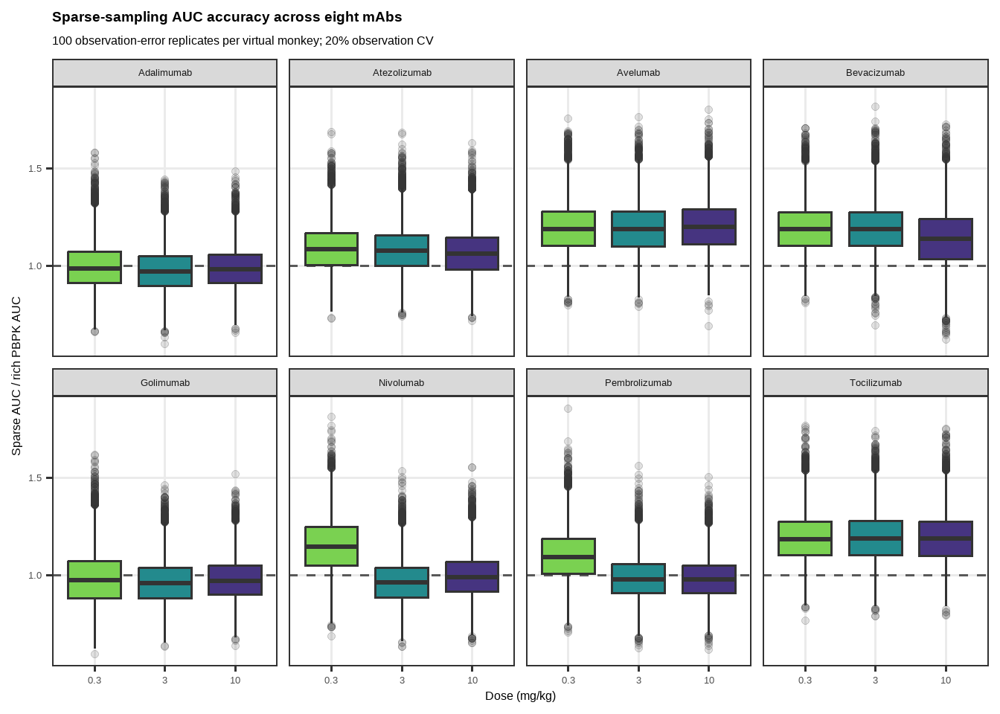
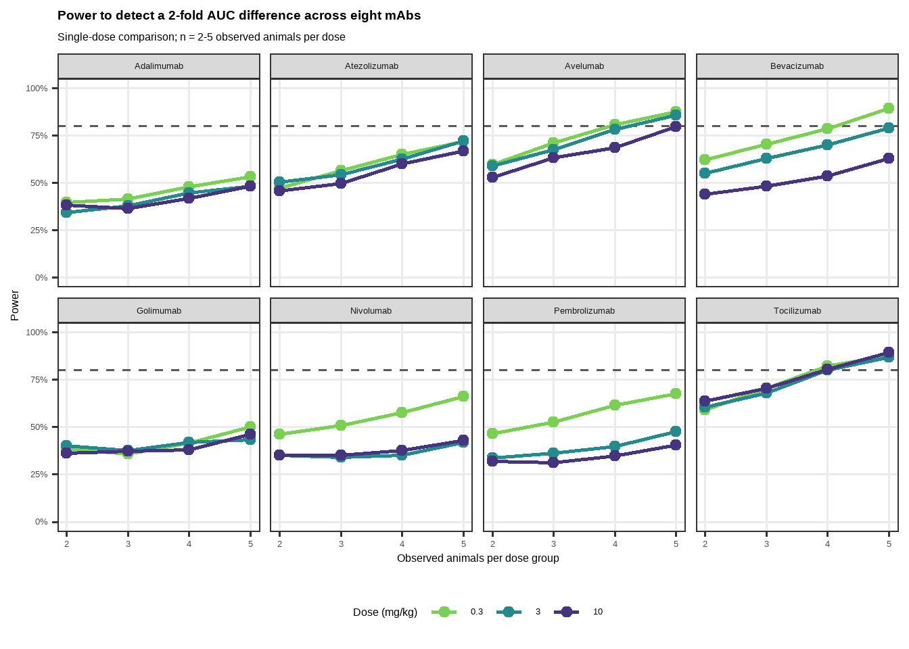
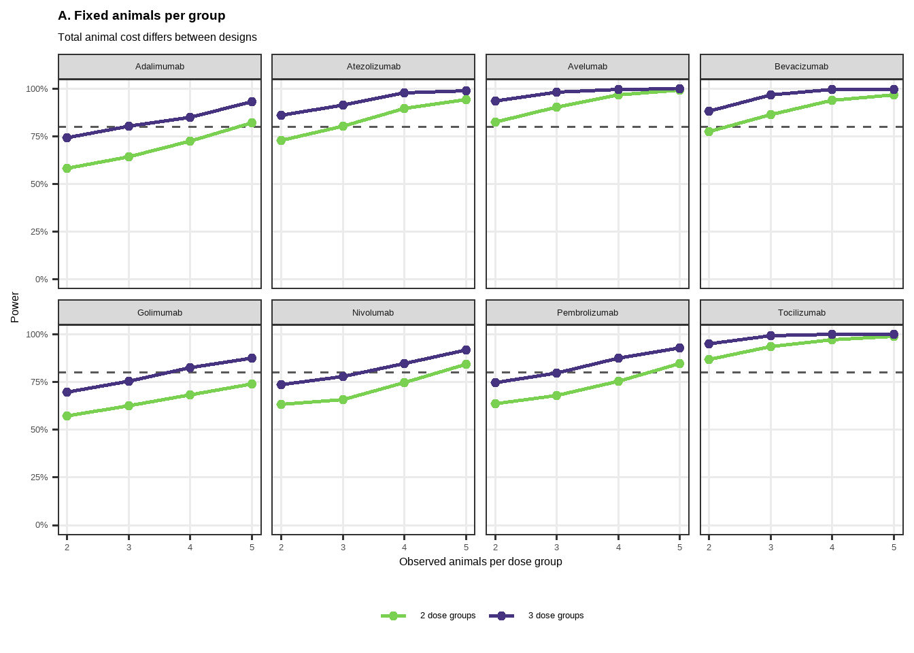
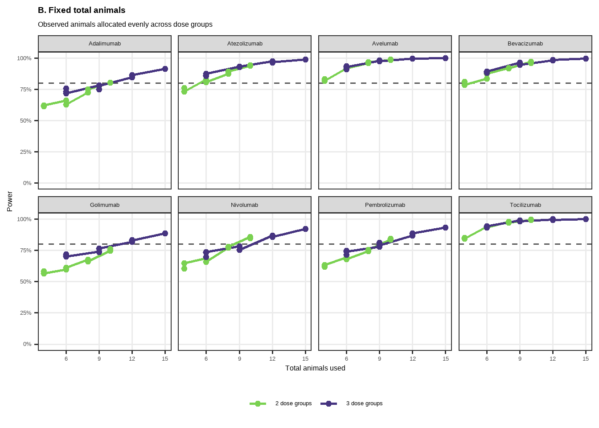

rm(list = ls())
suppressPackageStartupMessages({
library(tidyverse)
library(openxlsx)
library(lhs)
library(ospsuite)
library(esqlabsR)
library(knitr)
library(kableExtra)
})
set.seed(20260624)
N_VIRTUAL <- 100L
PARAMETER_CV <- 0.30
FCRN_CV <- 0.30
LYMPH_FLOW_CV <- 0.30
ENDOSOMAL_CL_CV <- 0.30
OBSERVATION_CV <- 0.20
EFFECT_FOLD <- 2
AUC_END_H <- 28 * 24
ALPHA <- 0.05
N_POWER_SIM <- 1000L # increase to >=5000 for the final analysis
N_SPARSE_REP <- 100L
RUN_PBPK <- TRUE # set TRUE only when PBPK simulations must be regenerated
STUDY_DOSES <- c(0.3, 3, 10)
N_PER_GROUP <- 2:5
FIXED_TOTAL_N <- 4:15
MABS <- c(
"Adalimumab", "Atezolizumab", "Avelumab", "Bevacizumab",
"Golimumab", "Nivolumab", "Pembrolizumab", "Tocilizumab"
)
# Common plotting style. Figures are intentionally compact, while retaining a
# base font size of 12 so labels remain readable in the rendered report.
STUDY_THEME <- theme_bw(base_size = 12) +
theme(
legend.position = "bottom",
plot.title = element_text(face = "bold"),
panel.grid.minor = element_blank()
)
# Reduced serial sampling schedule selected for this study-design exercise.
# It retains an early distribution-phase sample at 15 min, two additional
# samples within the first 6 h, and six samples spanning Days 2-28.
#
# The schedule is sparser than the published Gupta et al. cynomolgus mAb
# schedule (15 min, 4 h, 8 h; Days 1, 3, 5, 7, 10, 14, 21, 28 and 42).
# Consequently, the present analysis explicitly evaluates its bias and
# variability against the rich PBPK AUC rather than claiming that this exact
# reduced schedule is a literature-standard schedule.
#
# Reference:
# Gupta P et al. MAbs. 2016;8(5):991-997.
# doi:10.1080/19420862.2016.1167294; PMID:27031797.
SPARSE_TIME_H <- c(
0.25, 4, 6,
2, 6, 10, 14, 21, 28
) * c(1, 1, 1, rep(24, 6))
study_dir <- normalizePath(".", winslash = "/", mustWork = TRUE)
project_dir <- normalizePath("..", winslash = "/", mustWork = TRUE)
data_dir <- file.path(project_dir, "01_Data", "Monkey")
config_dir <- file.path(study_dir, "Configurations")
population_dir <- file.path(config_dir, "PopulationsCSV")
output_root <- file.path(study_dir, "SimsOutputs")
figure_dir <- file.path(output_root, "Figures")
table_dir <- file.path(output_root, "Tables")
walk(
c(config_dir, population_dir, output_root, figure_dir, table_dir),
~ dir.create(.x, recursive = TRUE, showWarnings = FALSE)
)
safe_save_workbook <- function(wb, path) {
tmp <- tempfile(fileext = ".xlsx", tmpdir = config_dir)
on.exit(unlink(tmp), add = TRUE)
saveWorkbook(wb, tmp, overwrite = TRUE)
if (!file.copy(tmp, path, overwrite = TRUE)) {
stop("Could not write ", path, ". Close the workbook if it is open in Excel.")
}
invisible(path)
}
make_lognormal <- function(u, typical, cv) {
# The spreadsheet value is interpreted as the typical value (median).
sdlog <- sqrt(log1p(cv^2))
qlnorm(u, meanlog = log(typical), sdlog = sdlog)
}
trapz_auc <- function(time_h, concentration, end_h = Inf) {
keep <- is.finite(time_h) & is.finite(concentration) &
time_h <= end_h & concentration >= 0
time_h <- time_h[keep]
concentration <- concentration[keep]
ord <- order(time_h)
time_h <- time_h[ord]
concentration <- concentration[ord]
if (length(time_h) < 2L) return(NA_real_)
sum(diff(time_h) * (head(concentration, -1) + tail(concentration, -1)) / 2)
}
linup_logdown_auc <- function(time_h, concentration) {
# Standard linear-up/log-down trapezoidal NCA:
# - linear trapezoid when concentrations rise or either value is nonpositive;
# - logarithmic trapezoid when concentrations decline.
keep <- is.finite(time_h) & is.finite(concentration) & concentration >= 0
time_h <- time_h[keep]
concentration <- concentration[keep]
ord <- order(time_h)
time_h <- time_h[ord]
concentration <- concentration[ord]
if (length(time_h) < 2L) return(NA_real_)
dt <- diff(time_h)
c1 <- head(concentration, -1)
c2 <- tail(concentration, -1)
declining <- c2 < c1 & c1 > 0 & c2 > 0
intervals <- dt * (c1 + c2) / 2
intervals[declining] <-
dt[declining] * (c1[declining] - c2[declining]) /
log(c1[declining] / c2[declining])
sum(intervals)
}Preclinical Study Simulations: Eight-mAb Virtual Monkey Analysis
Purpose and analysis settings
This test workflow:
- generates 100 virtual cynomolgus monkeys;
- samples six drug/target parameters for each of eight mAbs and FcRn expression with 40% CV, plus endosomal clearance and whole-body lymph flow with 30% CV, using Latin hypercube sampling from log-normal distributions;
- runs 0.3, 3, and 10 mg/kg simulations for every mAb and monkey;
- calculates both rich-grid (“true”) and experimentally sparse AUC0-672h; and
- estimates power to detect a two-fold observed-versus-PBPK-predicted AUC difference.
The rich-grid PBPK AUC is treated as the predicted reference distribution. Simulated “observed” AUCs are estimated from sparse profiles, include bioanalytical/sampling error, and have a geometric mean two-fold above the PBPK prediction under the power-analysis alternative.
Generate the monkey virtual population
The CSV is written in the format consumed by ospsuite::loadPopulation() and esqlabsR when ReadPopulationFromCSV = TRUE. The simulations below use the same generated monkeys as individual scenarios so that each monkey can receive its own parameter sheet from Individuals.xlsx.
population_characteristics <- createPopulationCharacteristics(
species = Species$Monkey,
population = "Monkey",
numberOfIndividuals = N_VIRTUAL,
proportionOfFemales = 50,
weightMin = 2,
weightMax = 8,
weightUnit = "kg",
ageMin = 2,
ageMax = 30,
ageUnit = "year(s)",
seed = 20260624L
)
monkey_population <- createPopulation(population_characteristics)
monkey_population_df <- populationToDataFrame(monkey_population$population)
weight_column <- grep(
"^Organism\\|Weight",
names(monkey_population_df),
value = TRUE
)
stopifnot(length(weight_column) == 1L)
population_csv <- file.path(
population_dir, paste0("Monkey-Base-n", N_VIRTUAL, ".csv")
)
write.csv(
monkey_population_df,
population_csv,
row.names = FALSE,
na = ""
)
# Confirm that the saved population can be imported by ospsuite.
population_import_check <- loadPopulation(population_csv)
stopifnot(length(population_import_check$allIndividualIds) == N_VIRTUAL)
monkey_population_df %>%
transmute(
IndividualId,
Gender,
Weight_kg = .data[[weight_column]]
) %>%
kable(caption = "Generated 100-monkey base virtual population") %>%
kable_styling(bootstrap_options = c("striped", "condensed"),
full_width = FALSE)| IndividualId | Gender | Weight_kg |
|---|---|---|
| 0 | UNKNOWN | 5.510667 |
| 1 | UNKNOWN | 2.617504 |
| 2 | UNKNOWN | 5.741627 |
| 3 | UNKNOWN | 5.121266 |
| 4 | UNKNOWN | 2.124697 |
| 5 | UNKNOWN | 4.607031 |
| 6 | UNKNOWN | 3.119289 |
| 7 | UNKNOWN | 4.965653 |
| 8 | UNKNOWN | 5.162959 |
| 9 | UNKNOWN | 5.675726 |
| 10 | UNKNOWN | 5.047100 |
| 11 | UNKNOWN | 3.754811 |
| 12 | UNKNOWN | 2.326909 |
| 13 | UNKNOWN | 7.183964 |
| 14 | UNKNOWN | 6.584848 |
| 15 | UNKNOWN | 2.541871 |
| 16 | UNKNOWN | 7.565150 |
| 17 | UNKNOWN | 3.446277 |
| 18 | UNKNOWN | 5.579059 |
| 19 | UNKNOWN | 7.087596 |
| 20 | UNKNOWN | 6.995018 |
| 21 | UNKNOWN | 4.583220 |
| 22 | UNKNOWN | 7.765015 |
| 23 | UNKNOWN | 5.237625 |
| 24 | UNKNOWN | 5.663057 |
| 25 | UNKNOWN | 5.986919 |
| 26 | UNKNOWN | 5.562303 |
| 27 | UNKNOWN | 5.518671 |
| 28 | UNKNOWN | 3.216173 |
| 29 | UNKNOWN | 7.599429 |
| 30 | UNKNOWN | 5.597501 |
| 31 | UNKNOWN | 2.211393 |
| 32 | UNKNOWN | 6.695796 |
| 33 | UNKNOWN | 4.789110 |
| 34 | UNKNOWN | 4.662203 |
| 35 | UNKNOWN | 2.136500 |
| 36 | UNKNOWN | 7.179974 |
| 37 | UNKNOWN | 6.127747 |
| 38 | UNKNOWN | 7.278659 |
| 39 | UNKNOWN | 5.833521 |
| 40 | UNKNOWN | 4.429030 |
| 41 | UNKNOWN | 2.167347 |
| 42 | UNKNOWN | 3.516847 |
| 43 | UNKNOWN | 5.255649 |
| 44 | UNKNOWN | 6.850801 |
| 45 | UNKNOWN | 4.535518 |
| 46 | UNKNOWN | 7.222178 |
| 47 | UNKNOWN | 3.573990 |
| 48 | UNKNOWN | 5.940978 |
| 49 | UNKNOWN | 2.916881 |
| 50 | UNKNOWN | 7.245980 |
| 51 | UNKNOWN | 2.942320 |
| 52 | UNKNOWN | 5.875636 |
| 53 | UNKNOWN | 7.105569 |
| 54 | UNKNOWN | 2.667195 |
| 55 | UNKNOWN | 2.927447 |
| 56 | UNKNOWN | 2.852489 |
| 57 | UNKNOWN | 2.504003 |
| 58 | UNKNOWN | 7.458209 |
| 59 | UNKNOWN | 4.137778 |
| 60 | UNKNOWN | 7.044728 |
| 61 | UNKNOWN | 5.600618 |
| 62 | UNKNOWN | 3.749480 |
| 63 | UNKNOWN | 5.563529 |
| 64 | UNKNOWN | 2.078225 |
| 65 | UNKNOWN | 4.835707 |
| 66 | UNKNOWN | 5.059014 |
| 67 | UNKNOWN | 5.537799 |
| 68 | UNKNOWN | 4.521761 |
| 69 | UNKNOWN | 6.448348 |
| 70 | UNKNOWN | 3.361897 |
| 71 | UNKNOWN | 3.437403 |
| 72 | UNKNOWN | 4.167618 |
| 73 | UNKNOWN | 7.745538 |
| 74 | UNKNOWN | 4.658566 |
| 75 | UNKNOWN | 6.827671 |
| 76 | UNKNOWN | 3.066372 |
| 77 | UNKNOWN | 4.509365 |
| 78 | UNKNOWN | 6.386824 |
| 79 | UNKNOWN | 3.127539 |
| 80 | UNKNOWN | 6.764740 |
| 81 | UNKNOWN | 3.988314 |
| 82 | UNKNOWN | 7.577693 |
| 83 | UNKNOWN | 2.299292 |
| 84 | UNKNOWN | 2.353449 |
| 85 | UNKNOWN | 4.655181 |
| 86 | UNKNOWN | 4.335757 |
| 87 | UNKNOWN | 7.590227 |
| 88 | UNKNOWN | 4.121915 |
| 89 | UNKNOWN | 3.734756 |
| 90 | UNKNOWN | 7.284010 |
| 91 | UNKNOWN | 6.675972 |
| 92 | UNKNOWN | 6.669538 |
| 93 | UNKNOWN | 5.140881 |
| 94 | UNKNOWN | 6.788793 |
| 95 | UNKNOWN | 6.828411 |
| 96 | UNKNOWN | 6.417868 |
| 97 | UNKNOWN | 5.953318 |
| 98 | UNKNOWN | 5.177424 |
| 99 | UNKNOWN | 4.015094 |
Write esqlabsR configuration files
At this scale, individual parameter draws are stored directly in one population CSV per mAb. The same 100 physiological monkeys are reused across mAbs, while drug/target parameters are sampled separately for each molecule. Within an mAb, the same individual draw is reused at all three doses.
# At n=100 across eight mAbs, individual-scenario workbooks would require 800
# parameter sheets and 2,400 separate simulations. Instead, each mAb receives
# one PK-Sim population CSV containing 100 individuals and their parameter
# columns. esqlabsR then runs only 24 population scenarios (8 mAbs × 3 doses)
# while retaining all individual-level outputs.
population_file_index <- map_dfr(MABS, function(drug) {
drug_wide <- drug_parameter_draws %>%
filter(Drug == drug) %>%
select(IndividualId, Parameter, Value) %>%
pivot_wider(names_from = Parameter, values_from = Value)
pop <- monkey_population_df %>%
left_join(drug_wide, by = "IndividualId") %>%
left_join(physiology_draws, by = "IndividualId")
# Rename sampled drug parameters to complete PK-Sim parameter paths.
for (parameter_name in unique(
drug_parameter_source$Parameter[drug_parameter_source$Drug == drug]
)) {
full_path <- paste(
container_map[[parameter_name]], parameter_name, sep = "|"
)
pop[[full_path]] <- pop[[parameter_name]]
pop[[parameter_name]] <- NULL
}
pop[[
"Organism|EndogenousIgG|Endosome|Start concentration of free FcRn (endosome)"
]] <- pop[["Start concentration of free FcRn (endosome)"]]
pop[["Start concentration of free FcRn (endosome)"]] <- NULL
pop[["Organism|Specific clearance (endosome)"]] <-
pop[["Specific clearance (endosome)"]]
pop[["Specific clearance (endosome)"]] <- NULL
# Apply one correlated lymph-flow multiplier to all organ-specific factors.
for (i in seq_len(nrow(lymph_baseline))) {
pop[[lymph_baseline$Path[i]]] <-
physiology_draws[["Whole-body lymph flow multiplier"]] *
lymph_baseline$Typical[i]
}
pop[["Whole-body lymph flow multiplier"]] <- NULL
population_id <- paste0(drug, "_Monkey_n", N_VIRTUAL)
population_path <- file.path(population_dir, paste0(population_id, ".csv"))
write.csv(pop, population_path, row.names = FALSE, na = "")
# Round-trip validation catches malformed path columns before simulation.
imported_population <- loadPopulation(population_path)
stopifnot(length(imported_population$allIndividualIds) == N_VIRTUAL)
tibble(
Drug = drug,
PopulationId = population_id,
PopulationFile = population_path
)
})
# Individuals.xlsx remains part of the standard project configuration but is
# not used by population scenarios.
individual_wb <- createWorkbook()
addWorksheet(individual_wb, "IndividualBiometrics")
writeData(
individual_wb, "IndividualBiometrics",
data.frame(
IndividualId = character(), Species = character(),
Population = character(), Gender = character(),
`Weight [kg]` = numeric(), `Height [cm]` = numeric(),
`Age [year(s)]` = numeric(), `Protein Ontogenies` = character(),
check.names = FALSE
)
)
safe_save_workbook(individual_wb, file.path(config_dir, "Individuals.xlsx"))
# Empty Global sheet: drug/target parameters and all physiological IIV
# parameters are stored on the individual-specific sheets.
model_wb <- createWorkbook()
addWorksheet(model_wb, "Global")
writeData(
model_wb, "Global",
data.frame(
`Container Path` = character(),
`Parameter Name` = character(),
Value = numeric(),
Units = character(),
check.names = FALSE
)
)
safe_save_workbook(model_wb, file.path(config_dir, "ModelParameters.xlsx"))
population_config <- data.frame(
PopulationName = paste0("Monkey-Base-n", N_VIRTUAL),
species = "Monkey",
population = "Monkey",
numberOfIndividuals = N_VIRTUAL,
proportionOfFemales = 50,
weightMin = 2,
weightMax = 8,
weightUnit = "kg",
heightMin = NA_real_,
heightMax = NA_real_,
heightUnit = NA_character_,
ageMin = 2,
ageMax = 30,
BMIMin = NA_real_,
BMIMax = NA_real_,
BMIUnit = NA_character_,
`Protein Ontogenies` = NA_character_,
check.names = FALSE
)
user_variability <- data.frame(
`Container Path` = character(),
`Parameter Name` = character(),
Mean = numeric(),
SD = numeric(),
Distribution = character(),
check.names = FALSE
)
write.xlsx(
list(
Demographics = population_config,
UserDefinedVariability = user_variability
),
file.path(config_dir, "Populations.xlsx"),
overwrite = TRUE
)
application_wb <- createWorkbook()
for (drug in MABS) {
for (dose in STUDY_DOSES) {
protocol <- paste0(drug, "_", dose, "_mpk")
addWorksheet(application_wb, protocol)
writeData(
application_wb, protocol,
data.frame(
`Container Path` =
"Events|IV_Bolus|Application_1|ProtocolSchemaItem",
`Parameter Name` = "DosePerBodyWeight",
Value = dose,
Units = "mg/kg",
`Infusion time` = 1,
`Infusion time unit` = "min",
check.names = FALSE
)
)
}
}
safe_save_workbook(application_wb, file.path(config_dir, "Applications.xlsx"))
scenario_grid <- crossing(
Drug = MABS,
Dose_mgkg = STUDY_DOSES
) %>%
left_join(population_file_index, by = "Drug") %>%
left_join(
drug_parameter_source %>%
distinct(Drug, Target),
by = "Drug"
) %>%
mutate(
Scenario_name = paste(Drug, "Monkey", paste0("Dose", Dose_mgkg), sep = "_"),
IndividualId = NA_character_,
ReadPopulationFromCSV = TRUE,
ModelParameterSheets = '"Global"',
ApplicationProtocol = paste0(Drug, "_", Dose_mgkg, "_mpk"),
SimulationTime = "0, 12, 12; 13, 672, 28",
SimulationTimeUnit = "h",
SteadyState = FALSE,
SteadyStateTime = NA_real_,
SteadyStateTimeUnit = NA_character_,
ModelFile = case_when(
Target == "PD-L1" ~
"PKML_Files_Monkey/PKML_Files_Monkey/AntiPDL1.pkml",
Target == "PD-1" ~
"PKML_Files_Monkey/PKML_Files_Monkey/AntiPD1.pkml",
Target == "VEGFA" ~
"PKML_Files_Monkey/PKML_Files_Monkey/AntiVEGFA.pkml",
Target == "IL-6R" ~
"PKML_Files_Monkey/PKML_Files_Monkey/AntiIL6R.pkml",
Target == "TNFA" ~
"PKML_Files_Monkey/PKML_Files_Monkey/AntiTNFA.pkml"
),
OutputPathsIds = "PVB"
) %>%
select(
Scenario_name, IndividualId, PopulationId, ReadPopulationFromCSV,
ModelParameterSheets, ApplicationProtocol, SimulationTime,
SimulationTimeUnit, SteadyState, SteadyStateTime, SteadyStateTimeUnit,
ModelFile, OutputPathsIds
)
output_paths <- data.frame(
OutputPathId = "PVB",
OutputPath =
"Organism|PeripheralVenousBlood|mAb|Plasma (Peripheral Venous Blood)",
stringsAsFactors = FALSE
)
write.xlsx(
list(Scenarios = scenario_grid, OutputPaths = output_paths),
file.path(config_dir, "Scenarios.xlsx"),
overwrite = TRUE
)
project_configuration <- data.frame(
Property = c(
"modelFolder", "configurationsFolder", "modelParamsFile",
"individualsFile", "populationsFile", "populationsFolder",
"scenariosFile", "applicationsFile", "plotsFile", "dataFolder",
"dataFile", "dataImporterConfigurationFile", "outputFolder"
),
Value = c(
"../00_Models/", "Configurations/", "ModelParameters.xlsx",
"Individuals.xlsx", "Populations.xlsx", "PopulationsCSV",
"Scenarios.xlsx", "Applications.xlsx", NA, NA, NA, NA, "SimsOutputs/"
),
Description = NA_character_
)
write.xlsx(
project_configuration,
file.path(study_dir, "ProjectConfiguration.xlsx"),
overwrite = TRUE
)
configuration_qc <- tibble(
File = c(
"ProjectConfiguration.xlsx", "Configurations/Individuals.xlsx",
"Configurations/ModelParameters.xlsx", "Configurations/Populations.xlsx",
"Configurations/Applications.xlsx", "Configurations/Scenarios.xlsx",
paste0(
"Configurations/PopulationsCSV/",
population_file_index$PopulationId, ".csv"
)
),
Exists = file.exists(file.path(study_dir, File))
)
stopifnot(
all(configuration_qc$Exists),
nrow(scenario_grid) == length(MABS) * length(STUDY_DOSES)
)
configuration_qc %>% kable() %>% kable_styling(full_width = FALSE)| File | Exists |
|---|---|
| ProjectConfiguration.xlsx | TRUE |
| Configurations/Individuals.xlsx | TRUE |
| Configurations/ModelParameters.xlsx | TRUE |
| Configurations/Populations.xlsx | TRUE |
| Configurations/Applications.xlsx | TRUE |
| Configurations/Scenarios.xlsx | TRUE |
| Configurations/PopulationsCSV/Adalimumab_Monkey_n100.csv | TRUE |
| Configurations/PopulationsCSV/Atezolizumab_Monkey_n100.csv | TRUE |
| Configurations/PopulationsCSV/Avelumab_Monkey_n100.csv | TRUE |
| Configurations/PopulationsCSV/Bevacizumab_Monkey_n100.csv | TRUE |
| Configurations/PopulationsCSV/Golimumab_Monkey_n100.csv | TRUE |
| Configurations/PopulationsCSV/Nivolumab_Monkey_n100.csv | TRUE |
| Configurations/PopulationsCSV/Pembrolizumab_Monkey_n100.csv | TRUE |
| Configurations/PopulationsCSV/Tocilizumab_Monkey_n100.csv | TRUE |
Run all eight mAb population simulations
Set RUN_PBPK <- FALSE in the setup chunk to reuse the newest completed result folder without rerunning PK-Sim.
project <- createProjectConfiguration(
file.path(study_dir, "ProjectConfiguration.xlsx")
)
if (RUN_PBPK) {
scenario_configurations <- readScenarioConfigurationFromExcel(
scenarioNames = scenario_grid$Scenario_name,
projectConfiguration = project
)
scenarios <- createScenarios(scenario_configurations)
run_options <- SimulationRunOptions$new()
run_options$checkForNegativeValues <- FALSE
run_options$numberOfCores <- min(
8L, max(1L, parallel::detectCores(logical = TRUE) - 1L)
)
simulation_results <- runScenarios(
scenarios = scenarios,
simulationRunOptions = run_options
)
result_folder <- saveScenarioResults(simulation_results, project)
} else {
candidate_folders <- list.dirs(
file.path(output_root, "SimulationResults"),
recursive = FALSE,
full.names = TRUE
)
if (length(candidate_folders) == 0L) {
stop("No prior simulation result folder found. Set RUN_PBPK <- TRUE.")
}
result_folder <- candidate_folders[which.max(file.info(candidate_folders)$mtime)]
}
result_folder[1] "C:/Users/krina/OneDrive/NAMs/APriori_PBPK_NAM/05_StudySimulations/SimsOutputs/SimulationResults/2026-06-24 15-33"Rich-grid truth and reduced sparse-sampling AUC
The model output grid is retained to calculate a numerical reference or “true PBPK AUC.” It is not treated as an experimentally achievable sampling schedule.
The experimental analysis instead samples each PBPK profile at the reduced schedule selected for this exercise:
0.25, 4, 6 h; Days 2, 6, 10, 14, 21 and 28
This schedule is intentionally sparser than the single-IV-dose cynomolgus monkey mAb schedule reported by Gupta et al. The literature schedule provides the biological context, while the exact reduced schedule above is a study design choice being evaluated against the rich PBPK reference.
At each scheduled time, the PBPK concentration is obtained by linear interpolation. A mean-one log-normal observation multiplier with 40% CV is then added. This represents combined blood-sampling and ligand-binding-assay variability; it is separate from biological IIV in the PBPK parameters. Wang et al. demonstrated that serial microsampling can recover cynomolgus mAb PK parameters comparable to conventional serum sampling, supporting the use of serial sparse profiles in this setting.
Because the first post-dose sample is at 15 minutes, concentration from time zero to 15 minutes is approximated by the 15-minute concentration. For a long-half-life mAb this interval contributes minimally to AUC0-28d, but the assumption is stated explicitly. Sparse AUC is calculated with the standard linear-up/log-down trapezoidal method.
References:
- Gupta P, et al. MAbs. 2016;8:991-997. doi:10.1080/19420862.2016.1167294; PMID:27031797.
- Wang Y, et al. Pharm Res. 2021;38:819-830. doi:10.1007/s11095-021-03044-6; PMID:33982224.
result_files <- list.files(
result_folder,
pattern = "_Monkey_Dose.*\\.csv$",
full.names = TRUE
)
result_files <- result_files[
!str_detect(result_files, "_population\\.csv$")
]
stopifnot(length(result_files) == nrow(scenario_grid))
processed_profiles <- map(result_files, function(path) {
scenario_name <- tools::file_path_sans_ext(basename(path))
drug <- stringr::str_match(
scenario_name,
"^(.+)_Monkey_Dose"
)[, 2]
dose_mgkg <- as.numeric(stringr::str_match(
scenario_name,
"_Dose([0-9.]+)$"
)[, 2])
stopifnot(is.finite(dose_mgkg), drug %in% MABS)
# Population result files are large (~50 MB each). Process one scenario at
# a time with data.table and retain only individual AUC plus nine scheduled
# concentrations, avoiding a >40-million-row combined rich-profile object.
result <- data.table::fread(path, check.names = FALSE)
concentration_column <- grep(
"Plasma \\(Peripheral Venous Blood\\)",
names(result),
value = TRUE
)
stopifnot(length(concentration_column) == 1L)
data.table::setnames(
result,
c("Time [min]", concentration_column),
c("Time_min", "Concentration_umol_L")
)
result <- result[Time_min <= AUC_END_H * 60]
rich <- result[, .(
Rich_AUC_umol_h_L = trapz_auc(
Time_min / 60, Concentration_umol_L
)
), by = IndividualId] %>%
as_tibble() %>%
mutate(
Scenario_name = scenario_name,
Drug = drug,
Dose_mgkg = dose_mgkg,
.before = 1
)
sparse <- result[, {
interpolated <- approx(
x = Time_min / 60,
y = Concentration_umol_L,
xout = SPARSE_TIME_H,
rule = 2
)$y
.(Time_h = SPARSE_TIME_H,
True_concentration_umol_L = interpolated)
}, by = IndividualId] %>%
as_tibble() %>%
mutate(
Scenario_name = scenario_name,
Drug = drug,
Dose_mgkg = dose_mgkg,
.before = 1
)
list(rich = rich, sparse = sparse)
})
rich_auc <- map_dfr(processed_profiles, "rich")
sparse_concentrations_true <- map_dfr(processed_profiles, "sparse")
rm(processed_profiles)
invisible(gc())
# Generate repeated experimental realizations from each biological monkey.
# rlnorm(meanlog = -sigma^2/2) gives a multiplier with arithmetic mean 1.
# Thus observation error adds variance without systematically inflating
# concentration or AUC.
sigma_observation <- sqrt(log1p(OBSERVATION_CV^2))
sparse_auc_replicates <- crossing(
sparse_concentrations_true %>%
distinct(Scenario_name, Drug, IndividualId, Dose_mgkg),
SparseReplicate = seq_len(N_SPARSE_REP)
) %>%
left_join(
sparse_concentrations_true,
by = c("Scenario_name", "Drug", "IndividualId", "Dose_mgkg")
) %>%
mutate(
Observed_concentration_umol_L =
True_concentration_umol_L *
rlnorm(
n(),
meanlog = -0.5 * sigma_observation^2,
sdlog = sigma_observation
)
) %>%
group_by(
Scenario_name, Drug, IndividualId, Dose_mgkg, SparseReplicate
) %>%
summarise(
# Flat back-extrapolation over the unobserved 0-0.25 h interval.
Sparse_AUC_umol_h_L = linup_logdown_auc(
c(0, Time_h),
c(first(Observed_concentration_umol_L),
Observed_concentration_umol_L)
),
.groups = "drop"
) %>%
left_join(
rich_auc,
by = c("Scenario_name", "Drug", "IndividualId", "Dose_mgkg")
) %>%
mutate(
Sparse_to_rich_ratio = Sparse_AUC_umol_h_L / Rich_AUC_umol_h_L,
Sparse_bias_percent = 100 * (Sparse_to_rich_ratio - 1)
)
stopifnot(
nrow(rich_auc) == length(MABS) * length(STUDY_DOSES) * N_VIRTUAL,
nrow(sparse_auc_replicates) ==
length(MABS) * length(STUDY_DOSES) * N_VIRTUAL * N_SPARSE_REP,
all(is.finite(sparse_auc_replicates$Sparse_AUC_umol_h_L)),
all(sparse_auc_replicates$Sparse_AUC_umol_h_L > 0)
)
write.csv(
sparse_auc_replicates,
file.path(table_dir, "All_mAbs_sparse_AUC_replicates.csv"),
row.names = FALSE
)
# This empirical sparse-AUC distribution is used in all subsequent power
# analyses. It combines biological variability among virtual monkeys with
# uncertainty from sparse sampling and bioanalysis.
auc_individual <- sparse_auc_replicates %>%
transmute(
Scenario_name,
Drug,
IndividualId,
Dose_mgkg,
SparseReplicate,
AUC_umol_h_L = Sparse_AUC_umol_h_L
)
# Cache each drug-dose reference vector once. This avoids repeatedly filtering
# the 240,000-row sparse-AUC table inside tens of thousands of Monte Carlo
# replicates.
reference_key <- function(drug, dose) paste(drug, dose, sep = "__")
rich_reference_list <- split(
rich_auc$Rich_AUC_umol_h_L,
reference_key(rich_auc$Drug, rich_auc$Dose_mgkg)
)
sparse_reference_list <- split(
auc_individual$AUC_umol_h_L,
reference_key(auc_individual$Drug, auc_individual$Dose_mgkg)
)
auc_summary <- sparse_auc_replicates %>%
group_by(Drug, Dose_mgkg) %>%
summarise(
Biological_monkeys = n_distinct(IndividualId),
Sparse_profiles = n(),
Rich_AUC_geometric_mean =
exp(mean(log(Rich_AUC_umol_h_L))),
Rich_AUC_CV_percent =
100 * sd(
Rich_AUC_umol_h_L[!duplicated(
paste(Scenario_name, IndividualId)
)]
) / mean(
Rich_AUC_umol_h_L[!duplicated(
paste(Scenario_name, IndividualId)
)]
),
Sparse_AUC_geometric_mean =
exp(mean(log(Sparse_AUC_umol_h_L))),
Sparse_AUC_CV_percent =
100 * sd(Sparse_AUC_umol_h_L) / mean(Sparse_AUC_umol_h_L),
Median_sparse_bias_percent = median(Sparse_bias_percent),
Sparse_bias_5th_percentile = quantile(Sparse_bias_percent, 0.05),
Sparse_bias_95th_percentile = quantile(Sparse_bias_percent, 0.95),
.groups = "drop"
)
auc_summary %>%
kable(
digits = 3,
caption = paste0(
"Sparse versus rich PBPK AUC0-672h. Sparse profiles use ",
scales::percent(OBSERVATION_CV),
" proportional observation CV."
)
) %>%
kable_styling(bootstrap_options = c("striped", "condensed"),
full_width = FALSE)| Drug | Dose_mgkg | Biological_monkeys | Sparse_profiles | Rich_AUC_geometric_mean | Rich_AUC_CV_percent | Sparse_AUC_geometric_mean | Sparse_AUC_CV_percent | Median_sparse_bias_percent | Sparse_bias_5th_percentile | Sparse_bias_95th_percentile |
|---|---|---|---|---|---|---|---|---|---|---|
| Adalimumab | 0.3 | 100 | 10000 | 0.531 | 46.422 | 0.525 | 45.312 | -1.488 | -19.323 | 21.567 |
| Adalimumab | 3.0 | 100 | 10000 | 12.342 | 49.399 | 11.940 | 50.132 | -3.307 | -20.293 | 17.737 |
| Adalimumab | 10.0 | 100 | 10000 | 62.029 | 51.755 | 60.814 | 53.539 | -2.057 | -18.617 | 17.858 |
| Atezolizumab | 0.3 | 100 | 10000 | 0.436 | 43.667 | 0.473 | 43.869 | 8.304 | -9.490 | 29.772 |
| Atezolizumab | 3.0 | 100 | 10000 | 4.514 | 44.052 | 4.854 | 44.093 | 7.549 | -10.322 | 29.147 |
| Atezolizumab | 10.0 | 100 | 10000 | 16.293 | 44.975 | 17.270 | 44.829 | 5.976 | -11.955 | 27.987 |
| Avelumab | 0.3 | 100 | 10000 | 0.158 | 36.864 | 0.187 | 38.377 | 18.766 | -1.168 | 41.928 |
| Avelumab | 3.0 | 100 | 10000 | 1.598 | 36.741 | 1.892 | 38.537 | 18.444 | -1.338 | 42.270 |
| Avelumab | 10.0 | 100 | 10000 | 6.453 | 42.136 | 7.733 | 43.628 | 19.881 | 0.084 | 43.275 |
| Bevacizumab | 0.3 | 100 | 10000 | 0.168 | 36.860 | 0.199 | 38.380 | 18.521 | -0.474 | 41.885 |
| Bevacizumab | 3.0 | 100 | 10000 | 1.939 | 45.010 | 2.296 | 44.577 | 18.440 | -1.380 | 42.002 |
| Bevacizumab | 10.0 | 100 | 10000 | 9.678 | 54.649 | 10.897 | 47.685 | 13.507 | -11.879 | 39.313 |
| Golimumab | 0.3 | 100 | 10000 | 0.452 | 50.659 | 0.441 | 46.432 | -2.831 | -22.695 | 24.300 |
| Golimumab | 3.0 | 100 | 10000 | 11.790 | 50.395 | 11.285 | 51.119 | -4.393 | -21.480 | 17.002 |
| Golimumab | 10.0 | 100 | 10000 | 60.983 | 51.756 | 59.345 | 53.643 | -2.916 | -18.847 | 17.391 |
| Nivolumab | 0.3 | 100 | 10000 | 0.330 | 51.188 | 0.378 | 46.094 | 14.714 | -7.518 | 40.397 |
| Nivolumab | 3.0 | 100 | 10000 | 8.425 | 55.633 | 8.092 | 57.832 | -4.003 | -20.818 | 16.683 |
| Nivolumab | 10.0 | 100 | 10000 | 45.357 | 58.055 | 44.851 | 59.288 | -1.042 | -18.017 | 19.028 |
| Pembrolizumab | 0.3 | 100 | 10000 | 0.425 | 46.292 | 0.465 | 43.688 | 9.141 | -10.535 | 33.313 |
| Pembrolizumab | 3.0 | 100 | 10000 | 11.491 | 53.327 | 11.250 | 54.138 | -2.251 | -18.741 | 18.522 |
| Pembrolizumab | 10.0 | 100 | 10000 | 73.677 | 57.599 | 71.988 | 59.232 | -2.213 | -18.244 | 17.061 |
| Tocilizumab | 0.3 | 100 | 10000 | 0.158 | 36.971 | 0.187 | 38.554 | 18.408 | -1.091 | 41.801 |
| Tocilizumab | 3.0 | 100 | 10000 | 1.576 | 36.941 | 1.869 | 38.711 | 18.670 | -0.942 | 42.109 |
| Tocilizumab | 10.0 | 100 | 10000 | 5.240 | 36.858 | 6.208 | 38.542 | 18.621 | -1.415 | 42.266 |
sparse_auc_plot <- ggplot(
sparse_auc_replicates,
aes(
x = factor(Dose_mgkg),
y = Sparse_to_rich_ratio,
fill = factor(Dose_mgkg)
)
) +
geom_hline(yintercept = 1, linetype = 2, color = "grey35") +
geom_boxplot(outlier.alpha = 0.15) +
facet_wrap(~ Drug, ncol = 4) +
labs(
x = "Dose (mg/kg)",
y = "Sparse AUC / rich PBPK AUC",
title = "Sparse-sampling AUC accuracy across eight mAbs",
subtitle = paste0(
N_SPARSE_REP, " observation-error replicates per virtual monkey; ",
scales::percent(OBSERVATION_CV), " observation CV"
)
) +
scale_fill_viridis_d(
option = "D", direction = -1, begin = 0.15, end = 0.80,
guide = "none"
) +
STUDY_THEME
ggsave(
file.path(figure_dir, "All_mAbs_sparse_vs_rich_AUC.png"),
sparse_auc_plot, width = 8, height = 5.5, dpi = 300
)
sparse_auc_plot
PBPK-informed power versus animals per group
The two-sided test compares independent observed and PBPK-predicted log-AUC means. Both groups are sampled from the sparse-AUC empirical distribution, which includes drug/target IIV, FcRn-expression IIV, endosomal-clearance IIV, correlated whole-body lymph-flow IIV, sparse sampling, and 40% observation error. The observed group is shifted by log(2).
z_test_log_auc <- function(predicted_auc, observed_auc, alpha = ALPHA) {
x <- log(predicted_auc)
y <- log(observed_auc)
se <- sqrt(var(x) / length(x) + var(y) / length(y))
if (!is.finite(se) || se <= 0) return(FALSE)
abs((mean(y) - mean(x)) / se) > qnorm(1 - alpha / 2)
}
simulate_single_dose_power <- function(predicted_reference,
observed_reference,
n,
fold = EFFECT_FOLD,
n_sim = N_POWER_SIM) {
mean(replicate(n_sim, {
predicted <- sample(predicted_reference, n, replace = TRUE)
observed <- fold * sample(observed_reference, n, replace = TRUE)
z_test_log_auc(predicted, observed)
}))
}
power_curve <- crossing(
Drug = MABS,
Dose_mgkg = STUDY_DOSES,
N_per_group = N_PER_GROUP
) %>%
mutate(
Power = pmap_dbl(list(Drug, Dose_mgkg, N_per_group), ~ {
key <- reference_key(..1, ..2)
predicted_reference <- rich_reference_list[[key]]
observed_reference <- sparse_reference_list[[key]]
simulate_single_dose_power(
predicted_reference, observed_reference, ..3
)
}),
# PBPK-predicted animals are virtual and therefore have zero animal cost.
Total_animals = N_per_group,
Power_per_animal = Power / Total_animals
)
write.csv(
power_curve,
file.path(table_dir, "All_mAbs_power_curve.csv"),
row.names = FALSE
)
power_plot <- ggplot(
power_curve,
aes(x = N_per_group, y = Power, color = factor(Dose_mgkg))
) +
geom_hline(yintercept = 0.8, linetype = 2, color = "grey35") +
geom_line(linewidth = 1) +
geom_point(size = 2.5) +
facet_wrap(~ Drug, ncol = 4) +
scale_color_viridis_d(
option = "D", direction = -1, begin = 0.15, end = 0.80
) +
scale_x_continuous(breaks = N_PER_GROUP) +
scale_y_continuous(limits = c(0, 1), labels = scales::percent) +
labs(
x = "Observed animals per dose group",
y = "Power",
color = "Dose (mg/kg)",
title = "Power to detect a 2-fold AUC difference across eight mAbs",
subtitle = "Single-dose comparison; n = 2-5 observed animals per dose"
) +
STUDY_THEME
ggsave(
file.path(figure_dir, "All_mAbs_power_vs_sample_size.png"),
power_plot, width = 8, height = 5.5, dpi = 300
)
power_plot
power_curve %>%
select(
Drug, Dose_mgkg, N_per_group, Total_animals, Power, Power_per_animal
) %>%
kable(
digits = 3,
caption = paste0(
"Single-dose observed-versus-PBPK comparison. Total animals equals ",
"n/group because the PBPK reference group is virtual. Multi-dose ",
"animal accounting is presented in the next table."
)
) %>%
kable_styling(bootstrap_options = c("striped", "condensed"),
full_width = FALSE)| Drug | Dose_mgkg | N_per_group | Total_animals | Power | Power_per_animal |
|---|---|---|---|---|---|
| Adalimumab | 0.3 | 2 | 2 | 0.396 | 0.198 |
| Adalimumab | 0.3 | 3 | 3 | 0.414 | 0.138 |
| Adalimumab | 0.3 | 4 | 4 | 0.479 | 0.120 |
| Adalimumab | 0.3 | 5 | 5 | 0.532 | 0.106 |
| Adalimumab | 3.0 | 2 | 2 | 0.342 | 0.171 |
| Adalimumab | 3.0 | 3 | 3 | 0.378 | 0.126 |
| Adalimumab | 3.0 | 4 | 4 | 0.446 | 0.112 |
| Adalimumab | 3.0 | 5 | 5 | 0.483 | 0.097 |
| Adalimumab | 10.0 | 2 | 2 | 0.383 | 0.192 |
| Adalimumab | 10.0 | 3 | 3 | 0.365 | 0.122 |
| Adalimumab | 10.0 | 4 | 4 | 0.419 | 0.105 |
| Adalimumab | 10.0 | 5 | 5 | 0.483 | 0.097 |
| Atezolizumab | 0.3 | 2 | 2 | 0.471 | 0.236 |
| Atezolizumab | 0.3 | 3 | 3 | 0.563 | 0.188 |
| Atezolizumab | 0.3 | 4 | 4 | 0.651 | 0.163 |
| Atezolizumab | 0.3 | 5 | 5 | 0.716 | 0.143 |
| Atezolizumab | 3.0 | 2 | 2 | 0.502 | 0.251 |
| Atezolizumab | 3.0 | 3 | 3 | 0.543 | 0.181 |
| Atezolizumab | 3.0 | 4 | 4 | 0.626 | 0.156 |
| Atezolizumab | 3.0 | 5 | 5 | 0.722 | 0.144 |
| Atezolizumab | 10.0 | 2 | 2 | 0.457 | 0.228 |
| Atezolizumab | 10.0 | 3 | 3 | 0.496 | 0.165 |
| Atezolizumab | 10.0 | 4 | 4 | 0.601 | 0.150 |
| Atezolizumab | 10.0 | 5 | 5 | 0.666 | 0.133 |
| Avelumab | 0.3 | 2 | 2 | 0.595 | 0.298 |
| Avelumab | 0.3 | 3 | 3 | 0.710 | 0.237 |
| Avelumab | 0.3 | 4 | 4 | 0.808 | 0.202 |
| Avelumab | 0.3 | 5 | 5 | 0.874 | 0.175 |
| Avelumab | 3.0 | 2 | 2 | 0.590 | 0.295 |
| Avelumab | 3.0 | 3 | 3 | 0.675 | 0.225 |
| Avelumab | 3.0 | 4 | 4 | 0.783 | 0.196 |
| Avelumab | 3.0 | 5 | 5 | 0.857 | 0.171 |
| Avelumab | 10.0 | 2 | 2 | 0.530 | 0.265 |
| Avelumab | 10.0 | 3 | 3 | 0.632 | 0.211 |
| Avelumab | 10.0 | 4 | 4 | 0.684 | 0.171 |
| Avelumab | 10.0 | 5 | 5 | 0.796 | 0.159 |
| Bevacizumab | 0.3 | 2 | 2 | 0.621 | 0.310 |
| Bevacizumab | 0.3 | 3 | 3 | 0.702 | 0.234 |
| Bevacizumab | 0.3 | 4 | 4 | 0.785 | 0.196 |
| Bevacizumab | 0.3 | 5 | 5 | 0.891 | 0.178 |
| Bevacizumab | 3.0 | 2 | 2 | 0.551 | 0.276 |
| Bevacizumab | 3.0 | 3 | 3 | 0.630 | 0.210 |
| Bevacizumab | 3.0 | 4 | 4 | 0.701 | 0.175 |
| Bevacizumab | 3.0 | 5 | 5 | 0.788 | 0.158 |
| Bevacizumab | 10.0 | 2 | 2 | 0.441 | 0.220 |
| Bevacizumab | 10.0 | 3 | 3 | 0.483 | 0.161 |
| Bevacizumab | 10.0 | 4 | 4 | 0.536 | 0.134 |
| Bevacizumab | 10.0 | 5 | 5 | 0.628 | 0.126 |
| Golimumab | 0.3 | 2 | 2 | 0.382 | 0.191 |
| Golimumab | 0.3 | 3 | 3 | 0.358 | 0.119 |
| Golimumab | 0.3 | 4 | 4 | 0.417 | 0.104 |
| Golimumab | 0.3 | 5 | 5 | 0.500 | 0.100 |
| Golimumab | 3.0 | 2 | 2 | 0.401 | 0.200 |
| Golimumab | 3.0 | 3 | 3 | 0.377 | 0.126 |
| Golimumab | 3.0 | 4 | 4 | 0.419 | 0.105 |
| Golimumab | 3.0 | 5 | 5 | 0.432 | 0.086 |
| Golimumab | 10.0 | 2 | 2 | 0.362 | 0.181 |
| Golimumab | 10.0 | 3 | 3 | 0.373 | 0.124 |
| Golimumab | 10.0 | 4 | 4 | 0.380 | 0.095 |
| Golimumab | 10.0 | 5 | 5 | 0.462 | 0.092 |
| Nivolumab | 0.3 | 2 | 2 | 0.462 | 0.231 |
| Nivolumab | 0.3 | 3 | 3 | 0.507 | 0.169 |
| Nivolumab | 0.3 | 4 | 4 | 0.575 | 0.144 |
| Nivolumab | 0.3 | 5 | 5 | 0.663 | 0.133 |
| Nivolumab | 3.0 | 2 | 2 | 0.351 | 0.176 |
| Nivolumab | 3.0 | 3 | 3 | 0.341 | 0.114 |
| Nivolumab | 3.0 | 4 | 4 | 0.350 | 0.088 |
| Nivolumab | 3.0 | 5 | 5 | 0.419 | 0.084 |
| Nivolumab | 10.0 | 2 | 2 | 0.351 | 0.176 |
| Nivolumab | 10.0 | 3 | 3 | 0.353 | 0.118 |
| Nivolumab | 10.0 | 4 | 4 | 0.375 | 0.094 |
| Nivolumab | 10.0 | 5 | 5 | 0.429 | 0.086 |
| Pembrolizumab | 0.3 | 2 | 2 | 0.465 | 0.232 |
| Pembrolizumab | 0.3 | 3 | 3 | 0.528 | 0.176 |
| Pembrolizumab | 0.3 | 4 | 4 | 0.617 | 0.154 |
| Pembrolizumab | 0.3 | 5 | 5 | 0.676 | 0.135 |
| Pembrolizumab | 3.0 | 2 | 2 | 0.338 | 0.169 |
| Pembrolizumab | 3.0 | 3 | 3 | 0.361 | 0.120 |
| Pembrolizumab | 3.0 | 4 | 4 | 0.398 | 0.100 |
| Pembrolizumab | 3.0 | 5 | 5 | 0.476 | 0.095 |
| Pembrolizumab | 10.0 | 2 | 2 | 0.320 | 0.160 |
| Pembrolizumab | 10.0 | 3 | 3 | 0.311 | 0.104 |
| Pembrolizumab | 10.0 | 4 | 4 | 0.348 | 0.087 |
| Pembrolizumab | 10.0 | 5 | 5 | 0.404 | 0.081 |
| Tocilizumab | 0.3 | 2 | 2 | 0.592 | 0.296 |
| Tocilizumab | 0.3 | 3 | 3 | 0.704 | 0.235 |
| Tocilizumab | 0.3 | 4 | 4 | 0.823 | 0.206 |
| Tocilizumab | 0.3 | 5 | 5 | 0.877 | 0.175 |
| Tocilizumab | 3.0 | 2 | 2 | 0.604 | 0.302 |
| Tocilizumab | 3.0 | 3 | 3 | 0.679 | 0.226 |
| Tocilizumab | 3.0 | 4 | 4 | 0.801 | 0.200 |
| Tocilizumab | 3.0 | 5 | 5 | 0.867 | 0.173 |
| Tocilizumab | 10.0 | 2 | 2 | 0.636 | 0.318 |
| Tocilizumab | 10.0 | 3 | 3 | 0.703 | 0.234 |
| Tocilizumab | 10.0 | 4 | 4 | 0.803 | 0.201 |
| Tocilizumab | 10.0 | 5 | 5 | 0.893 | 0.179 |
Two- versus three-dose-group designs
For each dose, an observed-versus-predicted log-AUC ratio and its variance are calculated. Dose-specific ratios are combined by inverse-variance weighting. The two-dose design uses 0.3 and 30 mg/kg; the three-dose design adds 3 mg/kg.
Scenario A fixes observed animals per dose group, so the three-dose design uses more animals. Scenario B fixes the total number of observed animals and allocates them as evenly as possible across dose groups. PBPK-predicted reference samples are virtual and do not contribute to animal cost.
one_design_replicate <- function(drug, doses, n_by_dose,
fold = EFFECT_FOLD) {
estimates <- variances <- numeric(length(doses))
for (i in seq_along(doses)) {
key <- reference_key(drug, doses[i])
predicted_reference <- rich_reference_list[[key]]
observed_reference <- sparse_reference_list[[key]]
n <- n_by_dose[i]
predicted <- log(sample(predicted_reference, n, replace = TRUE))
observed <- log(fold * sample(observed_reference, n, replace = TRUE))
estimates[i] <- mean(observed) - mean(predicted)
variances[i] <- var(observed) / n + var(predicted) / n
}
if (any(!is.finite(variances)) || any(variances <= 0)) return(FALSE)
weights <- 1 / variances
pooled_estimate <- weighted.mean(estimates, weights)
pooled_se <- sqrt(1 / sum(weights))
abs(pooled_estimate / pooled_se) > qnorm(1 - ALPHA / 2)
}
simulate_design_power <- function(drug, doses, n_by_dose,
n_sim = N_POWER_SIM) {
mean(replicate(
n_sim,
one_design_replicate(drug, doses, n_by_dose)
))
}
design_doses <- list(
`2 dose groups` = c(0.3, 10),
`3 dose groups` = c(0.3, 3, 10)
)
# A: fixed observed n in each dose group.
fixed_n_design <- crossing(
Drug = MABS,
Design = names(design_doses),
N_per_group = N_PER_GROUP
) %>%
mutate(
Number_of_doses = lengths(design_doses[Design]),
Total_animals = Number_of_doses * N_per_group,
Power = pmap_dbl(list(Drug, Design, N_per_group), ~ {
doses <- design_doses[[..2]]
simulate_design_power(..1, doses, rep(..3, length(doses)))
}),
Comparison = "A: fixed n/group"
)
# B: fixed total observed animals; require at least two animals per dose.
fixed_total_design <- crossing(
Drug = MABS,
Design = names(design_doses),
Total_animals = FIXED_TOTAL_N
) %>%
mutate(
Number_of_doses = lengths(design_doses[Design]),
Number_of_groups = Number_of_doses,
N_per_group = floor(Total_animals / Number_of_groups),
Animals_used = N_per_group * Number_of_groups
) %>%
filter(
N_per_group >= min(N_PER_GROUP),
N_per_group <= max(N_PER_GROUP)
) %>%
mutate(
Power = pmap_dbl(list(Drug, Design, N_per_group), ~ {
doses <- design_doses[[..2]]
simulate_design_power(..1, doses, rep(..3, length(doses)))
}),
Comparison = "B: fixed total animals"
)
design_power <- bind_rows(
fixed_n_design %>%
transmute(
Drug, Design, Comparison, N_per_group, Total_animals,
Animals_used = Total_animals, Power
),
fixed_total_design %>%
select(
Drug, Design, Comparison, N_per_group, Total_animals,
Animals_used, Power
)
)
write.csv(
design_power,
file.path(table_dir, "All_mAbs_2_vs_3_dose_design_power.csv"),
row.names = FALSE
)
fixed_n_design %>%
transmute(
Drug,
Design,
`Animals per dose group` = N_per_group,
`Number of dose groups` = Number_of_doses,
`Total animals` = Total_animals,
Power,
`Power per animal` = Power / Total_animals
) %>%
arrange(Drug, `Animals per dose group`, `Number of dose groups`) %>%
kable(
digits = 3,
caption = paste0(
"Two- versus three-dose-group designs evaluated at n = 2-5 animals ",
"per dose group. Total animals = n/group × number of dose groups."
)
) %>%
kable_styling(
bootstrap_options = c("striped", "condensed"),
full_width = FALSE
)| Drug | Design | Animals per dose group | Number of dose groups | Total animals | Power | Power per animal |
|---|---|---|---|---|---|---|
| Adalimumab | 2 dose groups | 2 | 2 | 4 | 0.581 | 0.145 |
| Adalimumab | 3 dose groups | 2 | 3 | 6 | 0.743 | 0.124 |
| Adalimumab | 2 dose groups | 3 | 2 | 6 | 0.643 | 0.107 |
| Adalimumab | 3 dose groups | 3 | 3 | 9 | 0.805 | 0.089 |
| Adalimumab | 2 dose groups | 4 | 2 | 8 | 0.724 | 0.090 |
| Adalimumab | 3 dose groups | 4 | 3 | 12 | 0.849 | 0.071 |
| Adalimumab | 2 dose groups | 5 | 2 | 10 | 0.822 | 0.082 |
| Adalimumab | 3 dose groups | 5 | 3 | 15 | 0.932 | 0.062 |
| Atezolizumab | 2 dose groups | 2 | 2 | 4 | 0.729 | 0.182 |
| Atezolizumab | 3 dose groups | 2 | 3 | 6 | 0.862 | 0.144 |
| Atezolizumab | 2 dose groups | 3 | 2 | 6 | 0.805 | 0.134 |
| Atezolizumab | 3 dose groups | 3 | 3 | 9 | 0.913 | 0.101 |
| Atezolizumab | 2 dose groups | 4 | 2 | 8 | 0.895 | 0.112 |
| Atezolizumab | 3 dose groups | 4 | 3 | 12 | 0.977 | 0.081 |
| Atezolizumab | 2 dose groups | 5 | 2 | 10 | 0.944 | 0.094 |
| Atezolizumab | 3 dose groups | 5 | 3 | 15 | 0.989 | 0.066 |
| Avelumab | 2 dose groups | 2 | 2 | 4 | 0.824 | 0.206 |
| Avelumab | 3 dose groups | 2 | 3 | 6 | 0.936 | 0.156 |
| Avelumab | 2 dose groups | 3 | 2 | 6 | 0.902 | 0.150 |
| Avelumab | 3 dose groups | 3 | 3 | 9 | 0.980 | 0.109 |
| Avelumab | 2 dose groups | 4 | 2 | 8 | 0.967 | 0.121 |
| Avelumab | 3 dose groups | 4 | 3 | 12 | 0.997 | 0.083 |
| Avelumab | 2 dose groups | 5 | 2 | 10 | 0.991 | 0.099 |
| Avelumab | 3 dose groups | 5 | 3 | 15 | 0.998 | 0.067 |
| Bevacizumab | 2 dose groups | 2 | 2 | 4 | 0.776 | 0.194 |
| Bevacizumab | 3 dose groups | 2 | 3 | 6 | 0.883 | 0.147 |
| Bevacizumab | 2 dose groups | 3 | 2 | 6 | 0.865 | 0.144 |
| Bevacizumab | 3 dose groups | 3 | 3 | 9 | 0.966 | 0.107 |
| Bevacizumab | 2 dose groups | 4 | 2 | 8 | 0.938 | 0.117 |
| Bevacizumab | 3 dose groups | 4 | 3 | 12 | 0.995 | 0.083 |
| Bevacizumab | 2 dose groups | 5 | 2 | 10 | 0.968 | 0.097 |
| Bevacizumab | 3 dose groups | 5 | 3 | 15 | 0.996 | 0.066 |
| Golimumab | 2 dose groups | 2 | 2 | 4 | 0.573 | 0.143 |
| Golimumab | 3 dose groups | 2 | 3 | 6 | 0.698 | 0.116 |
| Golimumab | 2 dose groups | 3 | 2 | 6 | 0.627 | 0.104 |
| Golimumab | 3 dose groups | 3 | 3 | 9 | 0.753 | 0.084 |
| Golimumab | 2 dose groups | 4 | 2 | 8 | 0.683 | 0.085 |
| Golimumab | 3 dose groups | 4 | 3 | 12 | 0.826 | 0.069 |
| Golimumab | 2 dose groups | 5 | 2 | 10 | 0.741 | 0.074 |
| Golimumab | 3 dose groups | 5 | 3 | 15 | 0.875 | 0.058 |
| Nivolumab | 2 dose groups | 2 | 2 | 4 | 0.632 | 0.158 |
| Nivolumab | 3 dose groups | 2 | 3 | 6 | 0.736 | 0.123 |
| Nivolumab | 2 dose groups | 3 | 2 | 6 | 0.660 | 0.110 |
| Nivolumab | 3 dose groups | 3 | 3 | 9 | 0.780 | 0.087 |
| Nivolumab | 2 dose groups | 4 | 2 | 8 | 0.749 | 0.094 |
| Nivolumab | 3 dose groups | 4 | 3 | 12 | 0.849 | 0.071 |
| Nivolumab | 2 dose groups | 5 | 2 | 10 | 0.844 | 0.084 |
| Nivolumab | 3 dose groups | 5 | 3 | 15 | 0.919 | 0.061 |
| Pembrolizumab | 2 dose groups | 2 | 2 | 4 | 0.638 | 0.160 |
| Pembrolizumab | 3 dose groups | 2 | 3 | 6 | 0.747 | 0.124 |
| Pembrolizumab | 2 dose groups | 3 | 2 | 6 | 0.680 | 0.113 |
| Pembrolizumab | 3 dose groups | 3 | 3 | 9 | 0.798 | 0.089 |
| Pembrolizumab | 2 dose groups | 4 | 2 | 8 | 0.754 | 0.094 |
| Pembrolizumab | 3 dose groups | 4 | 3 | 12 | 0.876 | 0.073 |
| Pembrolizumab | 2 dose groups | 5 | 2 | 10 | 0.849 | 0.085 |
| Pembrolizumab | 3 dose groups | 5 | 3 | 15 | 0.929 | 0.062 |
| Tocilizumab | 2 dose groups | 2 | 2 | 4 | 0.867 | 0.217 |
| Tocilizumab | 3 dose groups | 2 | 3 | 6 | 0.950 | 0.158 |
| Tocilizumab | 2 dose groups | 3 | 2 | 6 | 0.938 | 0.156 |
| Tocilizumab | 3 dose groups | 3 | 3 | 9 | 0.992 | 0.110 |
| Tocilizumab | 2 dose groups | 4 | 2 | 8 | 0.972 | 0.122 |
| Tocilizumab | 3 dose groups | 4 | 3 | 12 | 1.000 | 0.083 |
| Tocilizumab | 2 dose groups | 5 | 2 | 10 | 0.990 | 0.099 |
| Tocilizumab | 3 dose groups | 5 | 3 | 15 | 1.000 | 0.067 |
design_plot_a <- ggplot(
fixed_n_design,
aes(x = N_per_group, y = Power, color = Design)
) +
geom_hline(yintercept = 0.8, linetype = 2, color = "grey35") +
geom_line(linewidth = 1) +
geom_point(size = 2) +
facet_wrap(~ Drug, ncol = 4) +
scale_color_viridis_d(
option = "D", direction = -1, begin = 0.15, end = 0.80
) +
scale_x_continuous(breaks = N_PER_GROUP) +
scale_y_continuous(limits = c(0, 1), labels = scales::percent) +
labs(
x = "Observed animals per dose group",
y = "Power",
title = "A. Fixed animals per group",
subtitle = "Total animal cost differs between designs",
color = NULL
) +
STUDY_THEME
design_plot_b <- ggplot(
fixed_total_design,
aes(x = Animals_used, y = Power, color = Design)
) +
geom_hline(yintercept = 0.8, linetype = 2, color = "grey35") +
geom_line(linewidth = 1) +
geom_point(size = 2) +
facet_wrap(~ Drug, ncol = 4) +
scale_color_viridis_d(
option = "D", direction = -1, begin = 0.15, end = 0.80
) +
scale_y_continuous(limits = c(0, 1), labels = scales::percent) +
labs(
x = "Total animals used",
y = "Power",
title = "B. Fixed total animals",
subtitle = "Observed animals allocated evenly across dose groups",
color = NULL
) +
STUDY_THEME
ggsave(
file.path(figure_dir, "All_mAbs_dose_design_fixed_n.png"),
design_plot_a, width = 8, height = 5.5, dpi = 300
)
ggsave(
file.path(figure_dir, "All_mAbs_dose_design_fixed_total.png"),
design_plot_b, width = 8, height = 5.5, dpi = 300
)
design_plot_a
design_plot_b
Reproducibility record
sessionInfo()R version 4.5.1 (2025-06-13 ucrt)
Platform: x86_64-w64-mingw32/x64
Running under: Windows 10 x64 (build 19045)
Matrix products: default
LAPACK version 3.12.1
locale:
[1] LC_COLLATE=English_United States.utf8
[2] LC_CTYPE=English_United States.utf8
[3] LC_MONETARY=English_United States.utf8
[4] LC_NUMERIC=C
[5] LC_TIME=English_United States.utf8
time zone: America/Los_Angeles
tzcode source: internal
attached base packages:
[1] stats graphics grDevices utils datasets methods base
other attached packages:
[1] kableExtra_1.4.0 knitr_1.51 esqlabsR_5.5.1.9003
[4] ospsuite_12.4.0.9002 lhs_1.3.0 openxlsx_4.2.8.1
[7] lubridate_1.9.4 forcats_1.0.1 stringr_1.6.0
[10] dplyr_1.1.4 purrr_1.2.0 readr_2.1.6
[13] tidyr_1.3.2 tibble_3.3.0 ggplot2_4.0.1
[16] tidyverse_2.0.0
loaded via a namespace (and not attached):
[1] gtable_0.3.6 xfun_0.55
[3] htmlwidgets_1.6.4 tzdb_0.5.0
[5] vctrs_0.6.5 tools_4.5.1
[7] generics_0.1.4 parallel_4.5.1
[9] pkgconfig_2.0.3 data.table_1.18.0
[11] RColorBrewer_1.1-3 S7_0.2.1
[13] readxl_1.4.5 lifecycle_1.0.4
[15] compiler_4.5.1 farver_2.1.2
[17] textshaping_1.0.4 htmltools_0.5.9
[19] yaml_2.3.12 pillar_1.11.1
[21] crayon_1.5.3 rSharp_1.1.2.9000
[23] tidyselect_1.2.1 zip_2.3.3
[25] digest_0.6.39 stringi_1.8.7
[27] showtextdb_3.0 labeling_0.4.3
[29] fastmap_1.2.0 grid_4.5.1
[31] cli_3.6.5 logger_0.4.1
[33] magrittr_2.0.4 withr_3.0.2
[35] ospsuite.utils_1.9.0.9001 scales_1.4.0
[37] showtext_0.9-7 timechange_0.3.0
[39] rmarkdown_2.30 sysfonts_0.8.9
[41] otel_0.2.0 cellranger_1.1.0
[43] ragg_1.5.0 hms_1.1.4
[45] evaluate_1.0.5 tlf_1.6.2.9001
[47] viridisLite_0.4.2 rlang_1.1.6
[49] Rcpp_1.1.1-1.1 glue_1.8.0
[51] xml2_1.5.1 svglite_2.2.2
[53] rstudioapi_0.17.1 jsonlite_2.0.0
[55] R6_2.6.1 systemfonts_1.3.1
[57] fs_1.6.6